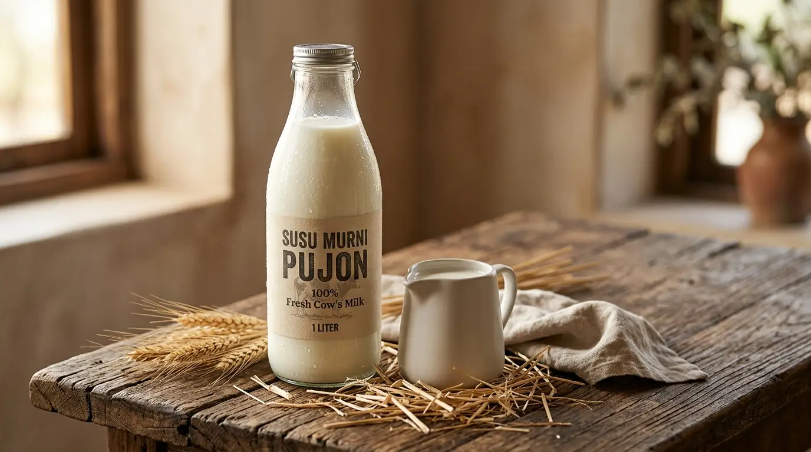
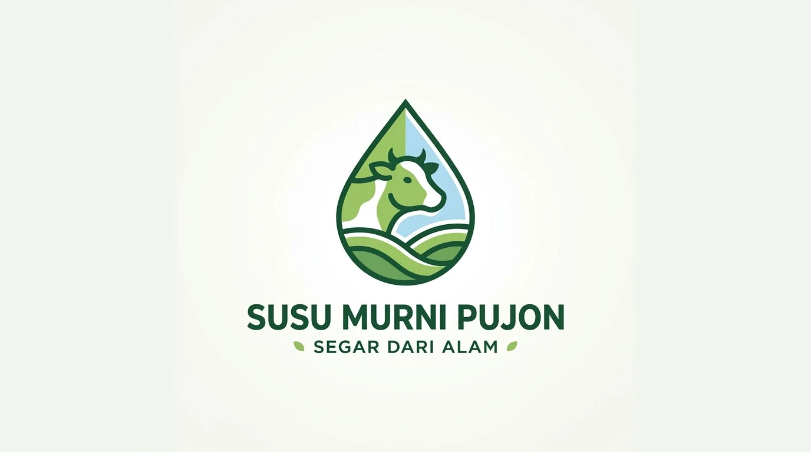
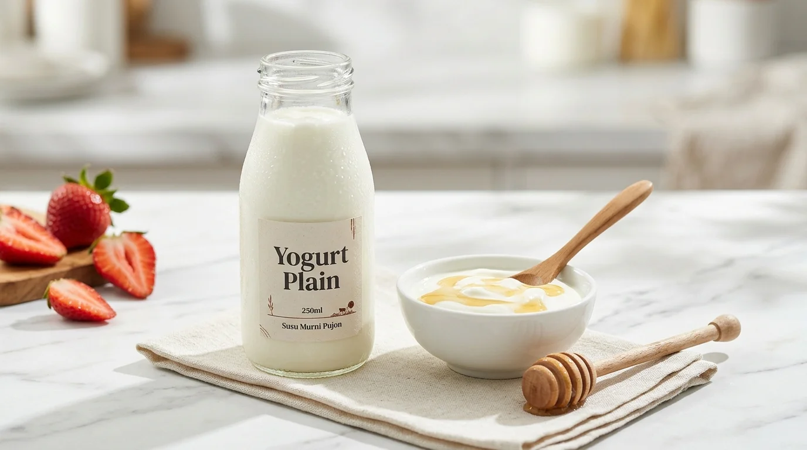
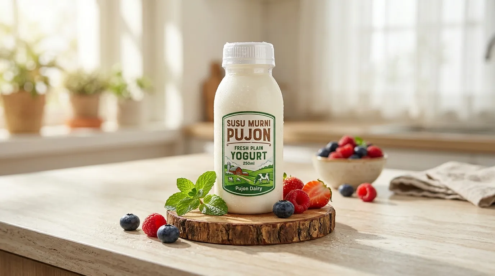

? TerverifikasiBatuTutup
Susu Murni Pujon Segar
?? Pujon, Kabupaten Malang
? Jam Operasional: Setiap hari, 06.00 � 16.00 WIB
Susu sapi murni pasteurisasi dan olahan yogurt segar langsung dari peternak lokal dataran tinggi Pujon. Higienis, bergizi tinggi, dan siap diantar dalam kondisi dingin setiap pagi.
Sertifikasi:
P-IRT Resmi
NIB Terdaftar
Tanya Pemilik Toko via WhatsApp
?? Dataran Tinggi Pujon
Etalase Menu & Produk


Jam Operasional & Lokasi Toko
? Jam Operasional
Buka: Setiap hari, 06.00 � 16.00 WIB
Melayani transaksi langsung di lokasi, pemesanan pesan-antar, dan konsultasi via WhatsApp.
?? Alamat & Rute
Pujon, Kabupaten Malang
Petunjuk Arah Google Maps ?
?? Pembayaran & Fasilitas
Menerima Tunai, Transfer Bank, dan QRIS.
Kemasan aman dan terstandarisasi untuk dibawa pulang atau dikirim.
Masih Mau Cari Kuliner atau Produk Serupa di Wilayah Ini?
Jelajahi puluhan UMKM sejenis lainnya yang berada di kecamatan yang sama.